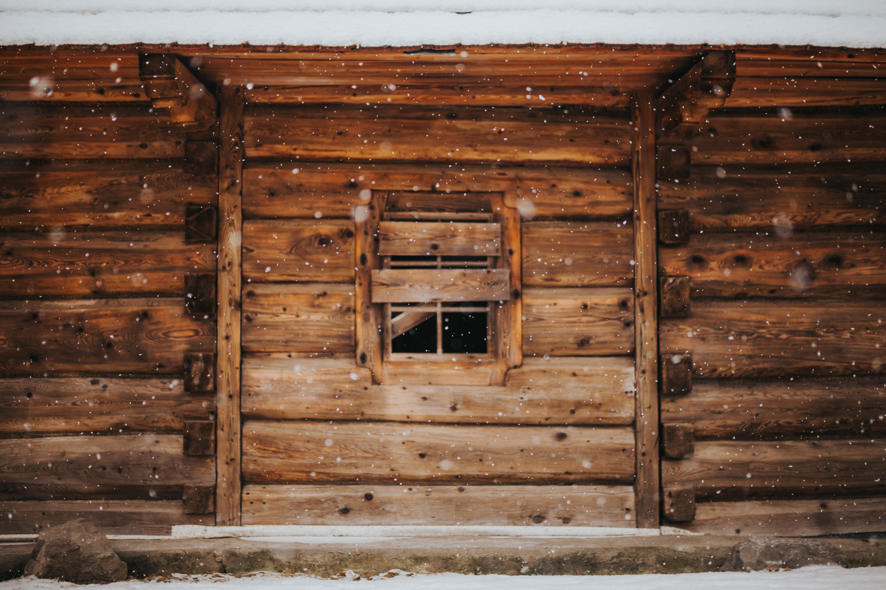

Kościół Katolicki w Cesarstwie Rosyjskim
Powstanie struktur Kościoła, parafii, dane o wiernych i duchowieństwie, budownictwo sakralne (rozdział prowadzi prof. dr hab. Andrzej Majdowski).
Historia katolików w Rosji w dziennikach i pamiętnikach
Opracowane tematycznie fragmenty z pamiętników i dzienników znanych postaci. Dane biograficzne o ich autorach.
Nekropolie katolickie
Informacje o pochowanych w Rosji duchownych (dane biograficzne, obecny stan grobów, informacje na temat modlitwy w ich intencji, opieki nad zaniedbanymi grobami itp.).